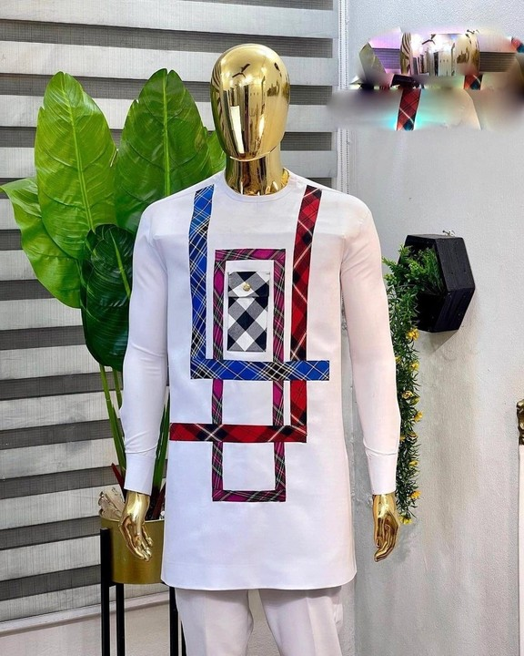

(25).jpeg) About Us – Essential Stitches
About Us – Essential Stitches Welcome to **Essential Stitches**, where fashion meets purpose, and every stitch is made with intention. We are an eCommerce clothing brand focused on delivering timeless, comfortable, and high-quality wardrobe essentials for modern individuals who value style, substance, and sustainability.
Our Mission
At Essential Stitches, we believe that clothing should do more than just cover you—it should empower you. Our mission is to create essential wardrobe pieces that are versatile, well-crafted, and made to last. Each item is thoughtfully designed to blend everyday wearability with elevated style, so you can feel confident in whatever you’re wearing, wherever you go. (26).jpeg)
Our Story
Founded in 2020, Essential Stitches began with a desire to slow down fast fashion and focus on what truly matters: quality, comfort, and authenticity. What started in a small home studio quickly evolved into a growing online store serving customers worldwide. Despite our growth, we’ve stayed true to our original vision—offering stylish, functional pieces that stand the test of time.Our Products
Our collection includes a range of men’s and women’s clothing: everyday basics, workwear, casualwear, and seasonal drops. Whether it's the perfect tee, a tailored blouse, or your go-to weekend outfit, we create clothes that become staples in your wardrobe. We use premium materials such as organic cotton, linen, and recycled fabrics to ensure every item feels as good as it looks.Sustainability & Responsiblity
We care about the planet just as much as we care about fashion. That’s why sustainability is at the core of everything we do. From sourcing eco-friendly fabrics to working with ethical manufacturers and using recyclable packaging, we’re committed to reducing our environmental footprint. Our journey isn’t perfect, but we’re transparent and continuously working toward a more sustainable future.-
-
- 
-

-
What Sets Us Apart
Community values
Join Us